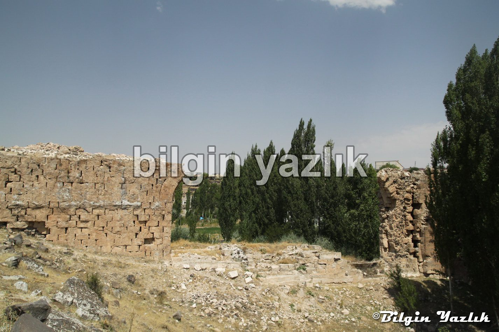
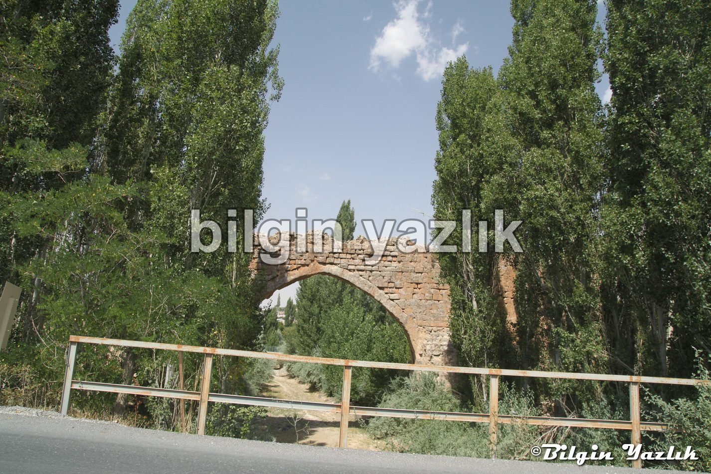
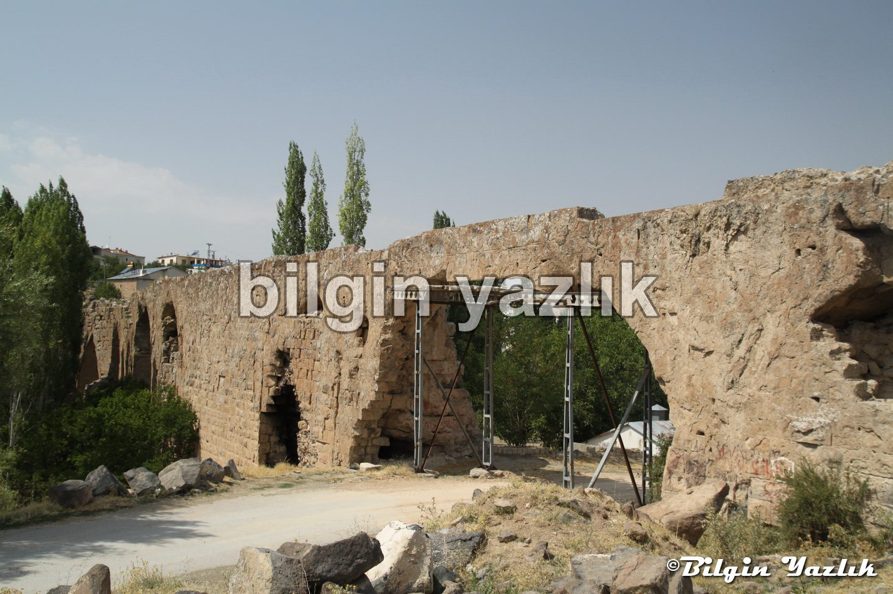

Kayseri & Koramaz · 29 Ekim 2014
Kuru Köprü
Kuru Köprü, aslında bir Bizans su kemeri ve Talas ilçesi sınırları içerisinde yer alan Kuruköprü mahallesinde bulunuyor.
Kemerde onarım çalışmaları yapılıyor.
Oldukça uzun ve yüksek bir kemer ve şu an kuru bir dere üzerinde yer alıyor.
Su kemeri ihtişamlı yapısı ile büyüleyici bir görünüme sahip, mutlaka görülmesi gerekiyor.
Zamanında Salguma suyu bu kemer üzerinden şehir merkezine akıtılırmış.
Tam Konum:
Talas
Kayseri, Türkiye
38.681654, 35.691700



Bu yazı taliyol arşivinden taşınmıştır. · özgün kayıt